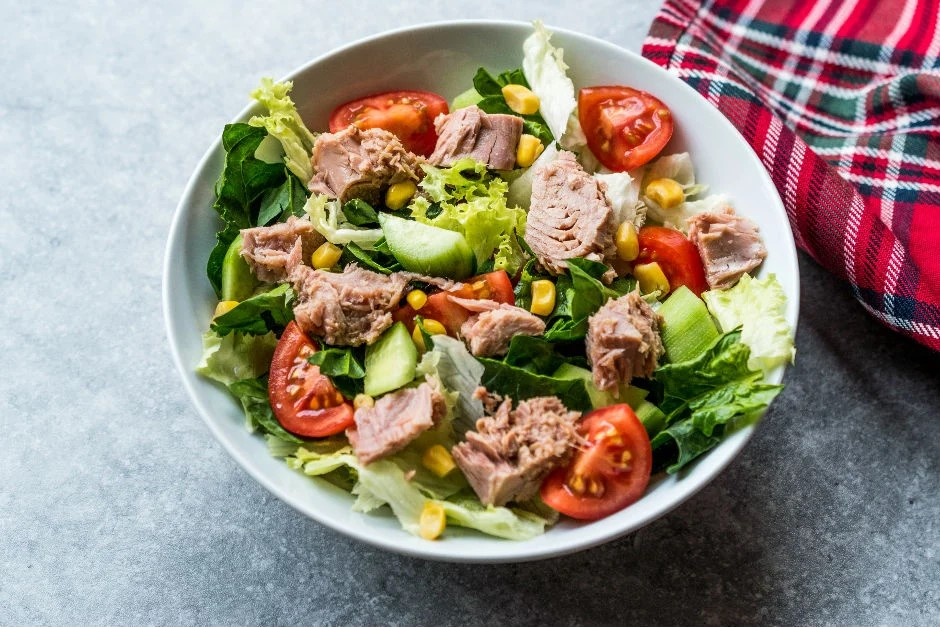

Tuna Salad

Ingredients:
- 5-6 leaves of lettuce
- 2-3 sprigs of parsley
- 4 cherry tomatoes
- 1 can of small tuna
- 2 tablespoons canned corn
- 1 tablespoon olive oil
- Juice of half a lemon
- Salt
Instructions:
- Lettuce, parsley, and tomatoes are washed well and chopped.
- Chopped ingredients are placed in a suitable bowl.
- Add drained tuna and corn. You can buy canned corn from the market, or you can boil it yourself at home.
- Add olive oil, salt, and lemon.
- All ingredients are mixed well and served.
- Your Tuna Salad is ready. Enjoy your meal!